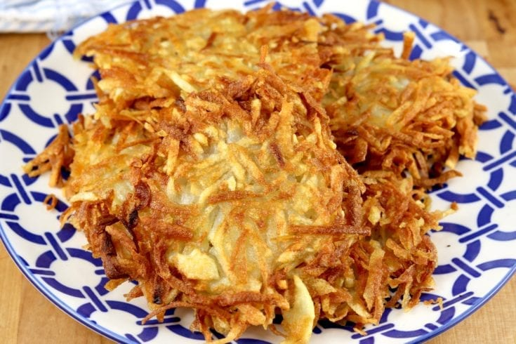

Classic Hash Browns

Getta forkfulla this goodness.
These classic diner-style hash browns are crispy on the outside and
fluffy on the inside.
What you'll need:
- 2 russet potatoes, peeled
- 3 tablespoons clarified butter
- salt and ground black pepper to taste
- 1 pinch cayenne pepper, or to taste
- 1 pinch paprika, or to taste
Now put it all together...
- Shred potatoes into a large bowl filled with cold water. Stir
until water is cloudy, drain, and cover potatoes again with fresh
cold water. Stir again to dissolve excess starch. Drain potatoes
well, pat dry with paper towels, and squeeze out any excess
moisture.
- Heat clarified butter in a large non-stick pan over medium heat.
Sprinkle shredded potatoes into the hot butter and season with
salt, black pepper, cayenne pepper, and paprika.
- Cook potatoes until a brown crust forms on the bottom, about 5
minutes. Continue to cook and stir until potatoes are browned
all over, about 5 more minutes.
Take me back!